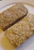
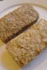

23 November 2004
Land of the Mataba
The second half of 2004 (almost)
I think my last update only covered 2004 until June. So there's still a fair bit to catch up on. But life keeps getting in the way. I'm thinking I should try and break these buggers down into smaller, more manageable chunks.
God I miss Weet-Bix
It's funny how the little things from home are the things you miss the most. As a kid I lived on weet-bix. (Either with milk and sugar or with peanut butter or marmite as a spread) And they've got something vaguely similar over here too. You tend to re-brand any time you live in another country, but Weetabix/Weet-Bix... not much difference you'd think. Both are a whole grain cereal biscuit-type affair...
...But no - you'd be wrong. As wrong as it was ever possible to be. Sanitarium Weet-Bix from NZ (not sure about Aus or South Africa) is a delicious golden crunchy biscuit, whereas Weetabix from the UK (for all that the name is similar) is actually just unappealing recycled paper briquettes.
 

A line-up of the different cereals
You can also buy something called Sunny-Bisk, which is 'supposed' to be the same as Weet-Bix in NZ, Aus and South Africa. But again, it falls a bit short when you compare it to Weet-Bix brought from home.
A smattering of snow
We had some great weather at the start of the year, as you can see. It doesn't often snow in Cheltenham, but I do like it - for novelty value - at least for the first few hours... After the first day though, most of the snow turns into a thin layer of packed ice, which doesn't melt for the next couple of days. Helps to make the walk to work just that little bit more interesting.
Sat and Rachel's Wedding

My last update I'd written about Sat's stag weekend, which was a great laugh. Well, the wedding was pretty awesome too. It was held at the Barbican, which was a really great venue.
The hilight of the reception for me was wearing the Indian Bindi (little jewelery on your forehead) and shuffling tables to go sit with Manjit, his lovely wife and son and Bob. The food was pretty fantastic too.
Transit of Venus
I had some great fun with the transit of venus. I rigged up a solar filter and a makeshift telescope so I could videotape the transit. The quality was pretty poor, but not that bad when you consider how bad my setup was.
Still bloody amazing to imagine that is a plant in-between us and the sun. And that it's commonplace for most people to be informed about such events these days. It gives me new-found respect for the astronomers of yesterday; Halley, Galilei, Ptolemy, Copernicus et al.
West coast USA
Vegas
Perhaps it was a little stupid, but straight after we landed, our plan was to drive straight to Vegas. After a 14 hour flight, this isn't actually that good an idea. About half way to Nevada I really ran out of energy and just had to have a kip for an hour or two. Still didn't feel rested after the kip, but Liezl was impatient to get to Vegas and it was getting pretty late.
Great place to spend some time in though. I'm not into the gambling scene, but I did throw a quarter into one of the slot machines (just so I could say that I had).
Managed to catch up with Simmo. He hasn't changed (apart from the Wife, respectable job and long dreadlocks).
Did the typical wander up and down the strip, but spent most of the time in the suburbs visiting friends. I met some great people there.
Shopping was fantastic. America is all about the Malls. I'm not the best shopper, but even I started to get into the shopping scene here. (Helps when you are on holiday too)
San Diego
After Vegas, San Diego was a nice bit of reality. It's a very pretty place. I could live there quite comfortably. Benihana was a good start. Fantastic Japanese style seafood. Cooked in front of us on a hotplate. In fact most of this trip was about food. The portions were huge, but oh so yummy!
The city itself reminded me of Wellington. Not stupidly spread out like Auckland. The weather wasn't particularly good though. One waitress called it the June-Gloom.
Los Angeles
I don't know what to say about LA. It's massive. It's great to see so many places that you can recognise from the movies. Again, we didn't really spend much time doing the typical touristy stuff. Mostly we just ate food and hung around with friends.
Surprisingly though, America isn't populated solely with fat people. I mean, it sort of has that reputation in other parts of the world, but I guess that is more applicable to states like Texas. Californians tend to be the beautiful people, concerned with looking good, staying fit and slim. And it was nice to see. That still didn't stop us from going to house of pancakes though. Even where we were staying in Long Beach, there were 3 donut shops within 400 metres of each other. Crazy!
The most painful thing was leaving on the last day. American Airlines really couldn't organise a piss-up in a brewery. We were delayed due to some maintenance work needed on the landing gear, then we had to dump fuel immediately after takeoff so we could land again when whatever it was happened again (wouldn't lock in the up position perhaps?). Then we hung around the airport until they decided that the plane wouldn't be ready that day. Then we had to queue to get hotel and food vouchers. By the time we got dropped off at the hotel, the hotel restaurant had closed, so we ended up walking to a nearby all-night restaurant. (we were told to take a taxi instead of walk the 400m... not sure why tbh)
I'm sure it was nice to get home though. I just don't understand why...
Dodgy Advertising in UK
I was pretty surprised to see this photo in a vodafone store on the way home. Maybe I have a filthy mind or something, but I've got to wonder what they were thinking of when they approved this one.
I.S. Christmas Party
We had a great Christmas party. The terrible threesome came in drag (again). What is it with those guys and dresses? It was a cowboy dress-up theme with your standard casino night, electric bull ride and not a small amount of alchohol. Unfortunately for the Banbury crowd, it sounds like their bus driver smoked a bit too much crack. After getting the bus stuck in mud before even making it away from the venue he then managed to get incredibly lost that it took several hours to get back to Banbury. (should've taken more like 40 minutes.)
I know this update is really random and disjointed, but I just had to get it finished. Next one will have our Philippines trip and my racing competition in Madrid.
Ciao